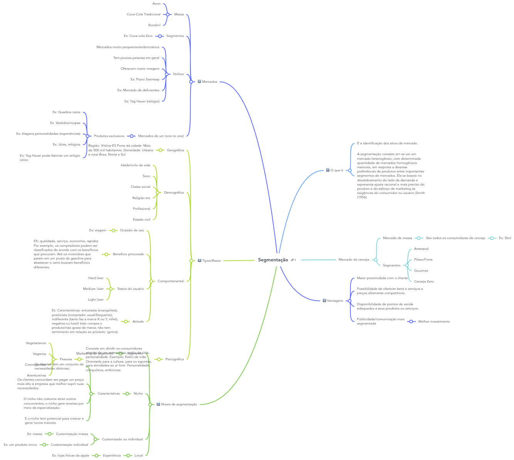

Disciplinas
GESTÃO DE INOVAÇÃO E DESENVOLVIMENTO DE PRODUTOS Concluído
Materiais
Vídeo 2 - O que é segmentação: tipos de segmentos de mercado sendProf° ministrante: DaniloMota
Segmentação
- O que é
- É a identificação dos alvos de mercado.
- A segmentação consiste em se ver um mercado heterogêneo, com determinada quantidade de mercados homogêneos menores, em resposta a diversas preferências de produtos entre importantes segmentos de mercados. Ela se baseia no desdobramento do lado de demanda e representa ajuste racional e mais preciso do produto e da esforço de marketing äs exigências do consumidor ou usuário (Smith 1956).
- Mercado de cerveja
- Mercado de massa
- São todos os consumidores de cerveja
- Ex: Skol
- Segmentos
- Artesanal
- Pilsen/Forte
- Gourmet
- Cerveja Zero
- Vantagens
- Maior proximidade com o cliente
- Possibilidade de oferecer bens e serviços a preços altamente competitivos
- Disponibilidade de pontos de venda adequados a seus produtos ou serviços,
- Publicidade/comunicação mais segmentada
- Melhor investimento
- Mercados
- Massa
- Avon
- Coca-Cola Tradicional
- Bombril
- Segmentos
- Ex: Coca-cola Zero
- Nichos
- Mercados muito pequenas/embrionários
- Tem poucas pessoas em geral
- Oferecem maior margem
- Ex: Piano Steinway
- Ex Mercado de deficientes
- Ex: Tag Hauer (relógio)
- Mercados de um (one to one)
- Produtos exclusivos
- Ex: Quadros carpe
- Ex: Vestidos/roupas
- Ex: Viagens personalidades (experiências)
- Ex: Joias, relógios
- Ex: Tag Hauer pode fabricar um relógio único
- Tipos/Bases
- Geográfica
- Região: Vitória-ES Porte da cidade: Mais de 500 mil habitantes. Densidade Urbana rural Area Norte e Sul
- Demográfica
- Idade/ciclo de vida
- Sexo
- Classe social
- Religião etc
- Profissional
- Estado civil
- Comportamental
- Ocasião de uso
- Ex: viagem
- Beneficio procurado
- EX: qualidade, serviço, economia, rapidez. Por exemplo, os compradores podem ser classificados de acordo com os benefícios que procuram, Até os motoristas que param em um posto de gasolina para abastecer o carro buscam benefícios diferentes.
- Status do usuário
- Hard User
- Medium User
- Light User
- Atitude
- Ex: Característicos entusiasta (evangelista), positivista (comprador usual/frequente), indiferente (tanto faz a marca X ou Y, infiel), negativa ou hostil (não compra o produto/não gosta da marca, não tem sentimento em relação ao produto, ignora).
- Psicográfica
- Consiste em dividir os consumidores através de um estereótipo, estilo de vida, personalidade. Exemplo: Estilo de vida: Orientado para a cultura, para os esportes, para atividades ao ar livre. Personalidade: compulsiva, ambiciosa.
- Pessoas
- Vegetarianos
- Veganas
- Cosmopolitas
- Aventureiras
- Níveis de segmentação
- Segmento
- Marketing de segmento
- Nicho
- Características
- Os clientes têm um conjunto de necessidades distintas:
- Os clientes concordam em pagar um preço mais alto à empresa que melhor suprir suas necessidades
- O nicho não costuma atrair outros concorrentes, o nicho gera receitas por meio da especialização;
- E o nicho tem potencial para crescer e gerar lucros maiores
- Customizado ou individual
- Customização massa
- Ex: massa
- Customização individual
- Ex: um produto único
- Local
- Experiência
- Ex: lojas físicas da apple
Mapa mental
